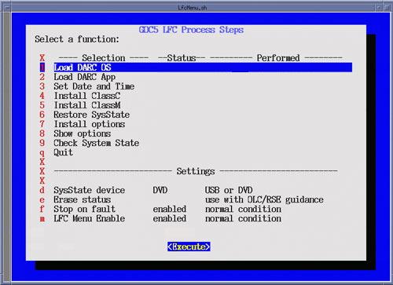
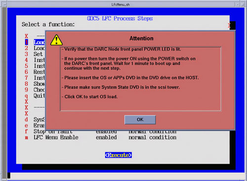
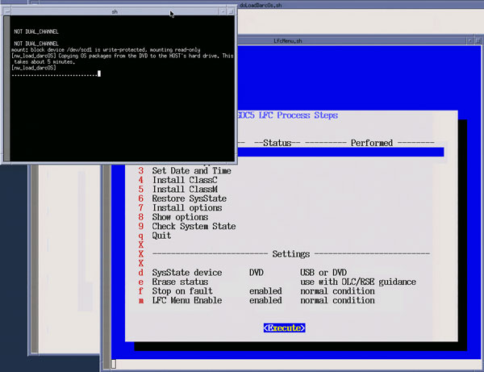
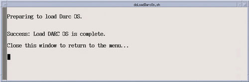

Insert DARC OS Disk in Host DVD drive.
Select Load DARC OS (Menu Selection #1)
Select [Execute], a shell window will open and the DARC OS software will be loaded.
Click [OK] on the Pop-up window.
Upon completion of the DARC OS software load, close the execution shell window to return to the LFC Menu.
Remove the DARC OS Disk from Host DVD drive.
Illustration 19: LFC Menu - Load DARC OS Selection

Illustration 20: Load DARC OS Execution - Attention Pop-up

Illustration 21: Load DARC OS Execution - Shell Window

Illustration 22: Load DARC OS Execution - Load Completion
